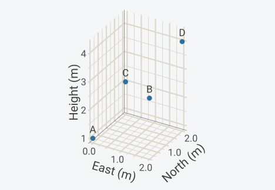
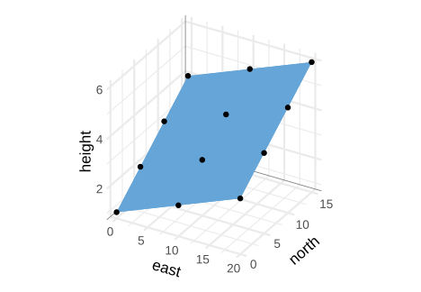

Prepare your own coordinate tables and height matrices for plotting by checking identifiers, grouping and grid positions. This article ends with labelled observations, two ordered paths and a surface converted from a matrix. It assumes the mappings in Get started; Choosing layers for observations and grids helps choose the geometry for the resulting table.
Read positions and join their attributes by identifier.
Order observations within each path.
Convert matrix indices to coordinates and check the grid.
Reading positions and joining attributes
Each record needs the positions required by its layer. Column names are supplied through the aesthetic mapping. These four survey positions use metres on all three axes. Their identifiers connect them to a second table of station labels, stored in a different order.
positions <- data.frame(id = c("s1", "s2", "s3", "s4"),
east = c(0, 2, 0, 2), north = c(0, 0, 2, 2), height = c(1, 3, 2, 4))
path <- tempfile(fileext = ".csv")
write.csv(positions, path, row.names = FALSE)
measured <- read.csv(path)
labels <- data.frame(id = c("s3", "s1", "s4", "s2"),
station = c("C", "A", "D", "B"))Check that each identifier occurs once and has a label, then join by that identifier. Keeping every measured row makes an unmatched label visible as a missing value if the input changes. For your own file, replace the temporary path with its location and map its coordinate column names in the plot.
stopifnot(nrow(measured) == 4L, !anyDuplicated(measured$id),
!anyDuplicated(labels$id), all(measured$id %in% labels$id))
stations <- merge(measured, labels, by = "id", all.x = TRUE, sort = FALSE)
stopifnot(nrow(stations) == nrow(measured))
stations[order(stations$id), c("id", "station", "height")]
#> id station height
#> 1 s1 A 1
#> 2 s2 B 3
#> 3 s3 C 2
#> 4 s4 D 4The joined labels remain attached to the recorded positions. Equal distances use equal model lengths when all axes share units and the coordinate system uses a data aspect ratio.
ggplot(stations, aes(east, north, z = height)) +
geom_point_3d(size = 3, colour = "#2E6F9E") +
geom_text_3d(aes(label = station), position = position_nudge_3d(z = 0.3),
size = 5) +
labs(x = "East (m)", y = "North (m)", z = "Height (m)") +
coord_3d(aspect = "data")
For variables with different units, choose an aspect ratio for the display in Choosing camera views. A position transformation also changes the meaning of distances; Scaling heights and facet ranges covers logarithms, dates and categories.
Ordering grouped paths
A path connects rows in their supplied order within each group. A tracking table therefore needs both a trajectory identifier and a sequence variable. These two tracks each contain four observations; sorting by track and time gives their travel order.
tracks <- data.frame(track = rep(c("A", "B"), each = 4),
time = rep(c(3, 1, 4, 2), 2),
east = rep(c(2, 0, 3, 1), 2),
north = rep(c(0, 2), each = 4),
height = c(2, 0, 3, 1, 1, 3, 0, 2))
tracks <- tracks[order(tracks$track, tracks$time), ]
stopifnot(!anyDuplicated(tracks[c("track", "time")]))
tracks[c("track", "time", "height")]
#> track time height
#> 2 A 1 0
#> 4 A 2 1
#> 1 A 3 2
#> 3 A 4 3
#> 6 B 1 3
#> 8 B 2 2
#> 5 B 3 1
#> 7 B 4 0Map the trajectory identifier to group so the end of one track stays separate from the start of the next. Line type and colour identify the tracks, and points mark the actual observations along them.
ggplot(tracks, aes(east, north, z = height, group = track)) +
geom_path_3d(aes(colour = track, linetype = track), linewidth = 0.9) +
geom_point_3d(size = 2) +
scale_colour_manual(values = c(A = "#2E6F9E", B = "#9E5E0F")) +
coord_3d()
Polygon rows similarly follow each ring’s boundary. Give each polygon a group and each ring a subgroup when there are holes. Choosing layers for observations and grids provides a polygon example; Animating cameras and data explains identifiers for moving observations.
Converting a height matrix
A matrix supplies a height at each row-column pair. Create explicit row and column indices, retrieve each height at that pair, then assign the corresponding horizontal coordinates. This small matrix describes a sloping surface with three row positions and four column positions.
height <- matrix(c(1, 2, 3, 2, 3, 4, 3, 4, 5, 4, 5, 6), nrow = 3)
east <- c(0, 10, 20)
north <- c(0, 5, 10, 15)
grid <- expand.grid(row = seq_len(nrow(height)), col = seq_len(ncol(height)))
grid$height <- height[cbind(grid$row, grid$col)]
grid$east <- east[grid$row]
grid$north <- north[grid$col]
stopifnot(nrow(grid) == length(height),
!anyDuplicated(grid[c("east", "north")]))
head(grid[c("east", "north", "height")])
#> east north height
#> 1 0 0 1
#> 2 10 0 2
#> 3 20 0 3
#> 4 0 5 2
#> 5 10 5 3
#> 6 20 5 4The explicit lookup associates every height with its matrix cell. Check the source’s axis convention before choosing which matrix dimension represents east or north. Swapping those dimensions rotates or transposes the displayed field.
ggplot(grid, aes(east, north, z = height)) +
geom_surface_3d(fill = "#2E6F9E") +
geom_point_3d(size = 2, occlusion = "overlay") +
coord_3d()
Checking grid keys and missing values
Height surfaces require unique x/y pairs within each group. If two measurements occupy the same pair, inspect those records before deciding whether they represent repeated measurements, different surfaces or an input error. The check below identifies both copies of a duplicated cell.
repeated <- rbind(grid, grid[1, ])
keys <- repeated[c("east", "north")]
repeated[duplicated(keys) | duplicated(keys, fromLast = TRUE),
c("east", "north", "height")]
#> east north height
#> 1 0 0 1
#> 13 0 0 1The surface layer reports these duplicate coordinates during its statistical computation. Capture that diagnostic to inspect it alongside the records.
tryCatch(
ggplot_build(ggplot(repeated, aes(east, north, z = height)) +
geom_surface_3d() + coord_3d()),
warning = function(w) cat(conditionMessage(w), "\n"))
#> Computation failed in `stat_surface3d()`.
#> Caused by error:
#> ! Surface x/y coordinates must be unique within each group.The original grid can be checked against all combinations of its
coordinates. Join observations to those keys when a complete table with
explicit missing values is needed. Preserve a missing height as
NA; zero would assert a measured height of zero.
expected <- expand.grid(east = sort(unique(grid$east)),
north = sort(unique(grid$north)))
complete <- merge(expected, grid[c("east", "north", "height")],
by = c("east", "north"), all.x = TRUE)
stopifnot(nrow(complete) == 12L, !anyNA(complete$height))
c(cells = nrow(complete), missing = sum(is.na(complete$height)))
#> cells missing
#> 12 0Grid surfaces leave cells with missing corners open. Scattered height measurements can use Delaunay triangulation, demonstrated in Constructing and reconstructing surfaces. A scalar field has three coordinate columns plus a separate value column and needs every x/y/z combination; Slicing fields and point densities works through that input.
Other input objects
| Input | Article |
|---|---|
| Indexed vertices and faces, OBJ, PLY or STL files | Reading and measuring meshes |
| Raster terrain, simple features and laser scans | Plotting maps and spatial data |
| Network nodes and edges | Drawing networks and trees |
| A position and vector components at each grid point | Drawing arrows and streamlines |
| Images to place on planes or surfaces | Choosing layers for observations and grids |